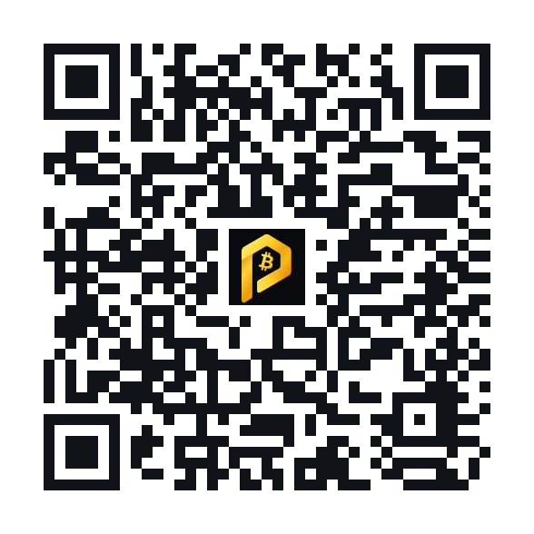

Bitcoin Payments (On-Chain)
Illustrative settings context — the donation card is the proposed change.
Hide for Non-Admin Users
If enabled, only administrators will see the payment method on Checkout page.
Debug
Debug logs will be saved to WooCommerce > Status > Logs.

PayCrypto.Me · Open source
Help move the project forward
Finding the plugin useful? Your Bitcoin donation helps support ongoing development.
Loading current donation address…